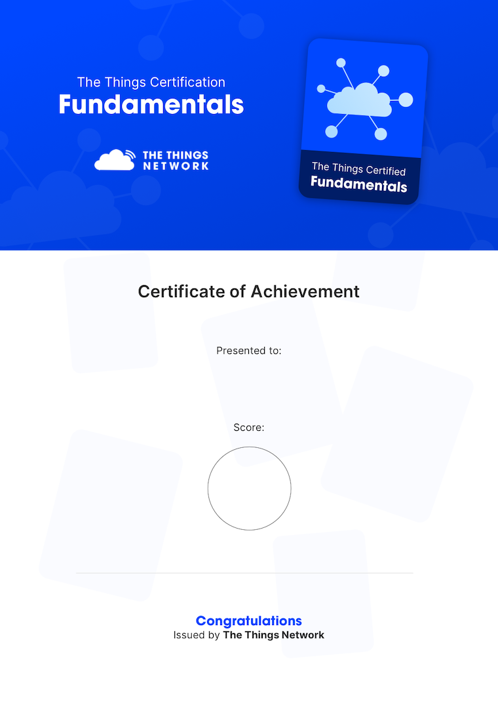
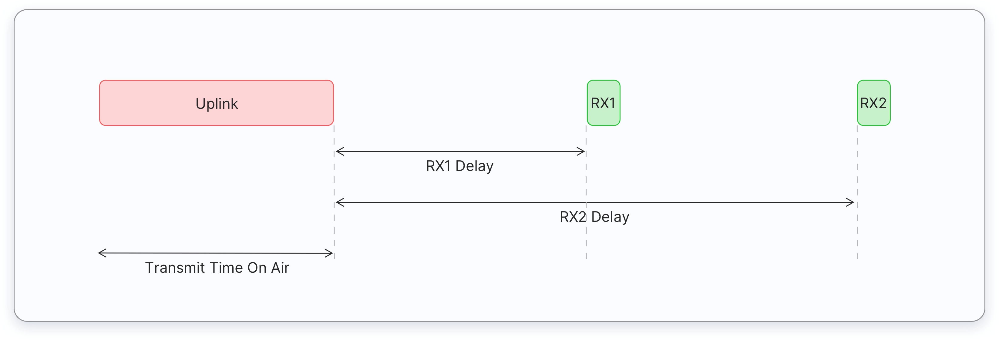
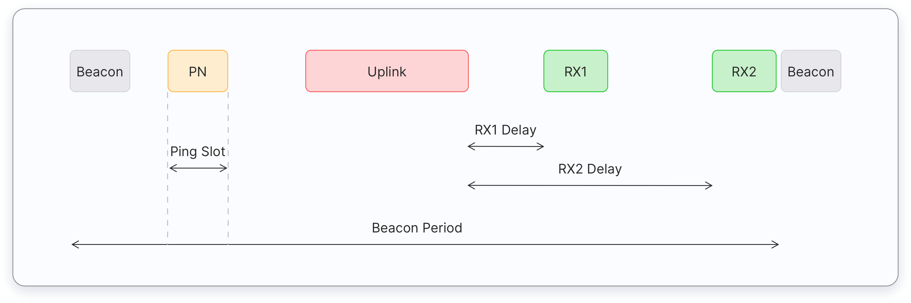
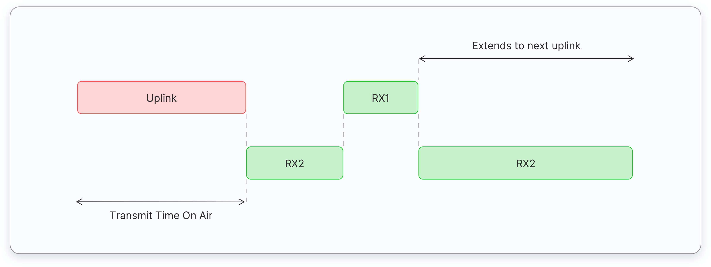
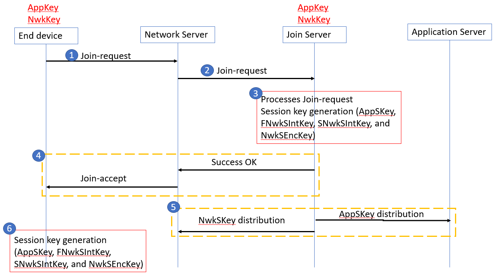

Preparing for The Things Certified Fundamentals
In this section, you’ll learn how to prepare for The Things Certification: The Things Certified Fundamentals.
What is The Things Certification? #
The Things Certification was first announced at The Things Conference 2021. It consists of four exams: The Things Certified Fundamentals, The Things Certified Advanced, The Things Certified Security, and The Things Certified Network Management. The Things Certification is the only certification program currently available for testing your LoRaWAN knowledge.
Who Should Take The Things Certified Fundamentals Exam? #
The Things Certified Fundamentals exam is intended for everyone who wants to officially validate their skills, and fundamental knowledge around the LoRaWAN protocol.
What Knowledge is Tested? #
You will be tested on
- LoRaWAN Basics
- LoRaWAN architecture
- Frequency plans
- Device classes
- Message types
- Spreading factors
- Adaptive Data Rate (ADR)
- Activation methods
- Basic security
- Limitations of LoRaWAN
Understanding the exam format and what question types will be coming will make it easier for you to answer them.
How Many Questions Are On The Exam And What Are The Question Types? #
The Things Certified Fundamentals exam contains 25 questions. These questions fall into two types: multiple-choice and true/false. Multiple-choice questions have only one correct answer and several incorrect answers. True/false questions are only composed of a statement. You should select whether it is true or false.
How Much Time Do I Have to Complete the Exam? #
You must answer all the questions within 15 minutes. However, if you don’t know the correct answer for a particular question, you can skip that question and proceed with the next one. You can also go back and answer those questions later within the exam time, or you can submit your exam along with the unanswered questions.
What Is A Passing Score? #
The Things Fundamentals exam is scored out of 100. You need a 70 or higher to pass the exam and gain your Things Fundamentals certificate.
How Much Does The Exam Cost? #
The Things Certified Fundamentals exam fee is 25 Euro. However, the exam is free for The Things Conference visitors and members of our Developer Success Program.
Study Materials #
Here is a list of study materials you need to prepare for the exam. The Things Certification is based on the LoRaWAN® specification 1.0.3, 1.1, and the LoRaWAN® Regional Parameters 1.0.3. You can download these documents from the LoRa Alliance resource hub.
We highly recommend you follow The Things Network Learn section and follow the LoRaWAN fundamentals course on Udemy - both are free. You can also read the security resources that can be found on the LoRa Alliance website.
How Do I Register For The Exam? #
First, you need The Things ID. Registration for The Things ID is free and it only takes a few minutes.
To get one, visit thethingsnetwork.org and click on the Sign up button.
On the Create an account page, provide a username, your email address, and a password, and click on the Create account button. Once created, you will receive an email for activating your account.
To take the exam, go to The Things Certifications. Then choose your certification (The Things Certified Fundamentals) and click Get this certificate.
You will be redirected to the payment page if you are not a The Things Conference visitor or a member of our Developer Success Program. Here you can enter your payment details and make the payment for the exam.
You will be redirected to the exam starting page. However, you can skip it and take the exam anytime.
Once you finish answering questions, you can submit your answers by clicking on the Finish now button. You will receive the result immediately. If you have passed the exam, you will receive a link to download your certificate (in PDF format).

The certificate shows the certification title, your name, marks, and the date you have taken the exam.
Practice Questions #
Here are some questions you will likely get in The Things Certified Fundamentals exam. We occasionally post these questions through polls on our LinkedIn.
Which end device class is the most energy-efficient and results in the longest battery life? #
- Class A
- Class B
- Class C
Skill measured: Device classes
These three device classes open ‘receive windows’ in 3 different ways.
Class A devices open two short receive windows after sending an uplink message.

Class B devices open two short receive windows after sending an uplink similar to Class A devices. In addition to that, Class B devices periodically receive a beacon from the network for aligning its internal clock with the network. Based on the beacon timing reference, they can open additional receive windows periodically called ping slots.

Class C devices open two short receive windows after sending an uplink similar to Class A devices. But Class C devices do not close the second receive window until it sends the next uplink.

When a receive window is opened, an end-device consumes much more battery power than when it is in sleep mode. By looking at the number of ‘receive windows’ and how long they open, the class C devices consume a lot more energy than the other two classes.
If you rank the device classes from lowest to the highest energy consumption, the lowest is class A, then class B and the highest is class C. So, the correct answer for this question is Class A device.
Which frequency range is allowed in Australia? #
- 863 – 870 MHz
- 902 – 928 MHz
- 915 – 928 MHz
- 470 – 510 MHz
Skill measured: Regional parameters
So, let’s look at the given options one by one. The first option is 863-870 MHz. This frequency range is allowed to be used in Europe – the most famous frequency range in LoRaWAN. The second option is 902-928 MHz. This frequency range is allowed to be used in USA. The third option is 915-928 MHz This frequency range is allowed to be used in Australia – yeah. We got the answer. The fourth option is 470-510 MHz, and it is allowed to be used in China. All this information can be found in the LoRaWAN regional parameters document. So, the correct answer for this question is 915 – 928 MHz.
What activation method is more secure? #
- Over The Air Activation (OTAA)
- Activation By Personalisation (ABP)
Skill measured: Device activation
LoRaWAN uses two methods for activating end devices.
The first one is called over-the-air-activation - abbreviated as OTAA. For over-the-air-activation, root keys must be stored securely in the LoRaWAN end device, and also the same root keys must be provisioned on the network side at the Join Server. The Join Server which is part of the backend interface provides a secure and trusted storage for root keys and assists in the processing of the join procedure. The root keys are used to derive session keys during the join procedure to activate the end-device within a network.
The second one is called activation by personalization - abbreviated as ABP. Activation By Personalization directly ties an end-device to a pre-selected network bypassing the over-the-air-activation procedure. No Join Server is involved in generating session keys. The DevAddr and the four-session keys FNwkSIntKey, SNwkSIntKey, NwkSEncKey, and AppSKey are directly stored into the end-device instead of being derived from the root keys. Also, the NwkSKey and the AppSKey should be stored in the Network Server and Application Server respectively. Activation by Personalization is the less secure activation method, and also has the downside that devices cannot switch network providers without manually changing session keys.
So, the correct answer for this question is Over-the-air-activation (OTAA).
LoRaWAN is operated in an unlicensed spectrum #
- True
- False
Skill measured: LoRaWAN basics
LoRaWAN operates on both licensed and unlicensed spectrum. If you carefully read the question, it doesn’t say LoRaWAN is operated only in an unlicensed spectrum. So, the correct answer is True.
Using a higher data rate results in ____. #
- Less time-on-air
- More time-on-air
Skills measured: Spreading factors / Data rate
In LoRaWAN the data rate depends on the spreading factor (SF) used. The lower the spreading factor the higher the data rate, and the higher the spreading factor the lower the data rate. With regards to the time-on-air, the higher the data rate the lower the time-on-air, and the lower the data rate the higher the time-on-air.
Therefore, using a higher data rate results in less time-on-air.
Where does an uplink message start? #
- End-device
- Gateway
- Network Server
- Application Server
Skill measured: LoRaWAN architecture
Let’s look at what is the role of each network element with regards to the uplink and downlink messages.
End device – uplink messages are always initiated by an end device Gateway – gateways receive messages from end devices and simply forward them to the network server Network server - initiates downlink messages Application server - initiates downlink messages
So, the correct answer for this question is End-device.
The AppSKey encrypts and decrypts the application payload. #
- True
- False
Skill measured: LoRaWAN security
For example, if an end device sends a data message containing an application payload, the message travels from the end device to the application server. At the end device side, the AppSKey is used to encrypt the application payload. Once encrypted, no one can’t read the payload. At the application server-side the AppSKey is used to decrypt the application payload. The AppSKey also ensures message confidentiality.
So, for this question, the correct answer is True.
Using the lowest spreading factor provides longer battery life #
- True
- False
Skills measured: Spreading factors
The LoRaWAN uses spreading factors (SF) ranging from 7 to 12. If you carefully read the question the lowest spreading factor means the SF7. The SF7 provides the highest data rate while the SF12 provides the lowest data rate. As the lower spreading factors provide a higher data rate, the time-on-air would be less. Less time-on-air means the amount of time the lora radio turned on is also less. Therefore, the lowest spreading factor provides a longer battery life. For this question, the correct answer is True.
How many default channels MUST be implemented in every EU868MHz end-device? #
- 3
- 8
- 4
- 16
Skills measured: Regional parameters
The LoRaWAN regional parameters document clearly states that there are 3 default channels that MUST be implemented in every EU868 end-device. The default channels are 868.10 MHz, 868.30 MHz, and 868.50 MHz. Among these three channels, a randomly chosen channel is used to broadcast the Join-request message. The EU868 gateways always listen on these three default channels.
So, the correct answer is 3.
Where are the root keys stored in LoRawan 1.1 (assume that the servers are not co-existed)? #
- End device and the network server
- End device and the application server
- End device and the Join Server
- End device and the Gateway server
Skills measured: LoRaWAN security
In LoRaWAN 1.1 root keys are stored in the end device and also the same set of root keys are stored in the Join server. See the image below:

So, the correct answer for this question is End device and the Join Server.
What element in a LoRaWAN network is responsible for the deduplication of messages? #
- Gateway
- Network Server
- Application Server
- Join Server
Skills measured: LoRaWAN architecture /message flow
A network can have more than one gateway. When a device sends a message, all the gateways within the range can receive that message. Each gateway forwards the message to the network server. Once received, the Network Server keeps only one message and discards all other copies. This is known as the deduplication of messages.
So, the correct answer is Network Server.
Which payload and data rate combination provides the longest battery life for an end device? #
- 20 byte payload at SF7
- 20 byte payload at SF8
- 20 byte payload at SF10
- 20 byte payload at SF12
Skills measured: Spreading factors
The power consumption of an end device depends on the payload size and the spreading factor used. You can see all answers contain the same payload size which is 20 bytes. So, we should consider the spreading factor used in each option.
The lower spreading factors use less power than the higher spreading factors. By looking at the spreading factors used in each option, the lowest spreading factor is 7. So, the correct answer is 20-byte payload at SF7.
What is not included in every uplink data message? #
- FCnt (Frame Counter)
- FPort (Port field)
- DevAddr
- NwkSKey
Skills measured: Message types
First, let’s have a look at the structure of a data message. You can see the frame header consists of the frame counter, port field, and device address. But the NwkSKey is not sent with a data message. It is only used to encrypt the MAC commands.
So, the correct answer is NwkSKey.